Explora microcontroladores, sensores y la gestión de datos en dispositivos modernos
SISTEMAS EMBEBIDOS
04.09.2025
BIENVENIDO
¡Hola y bienvenidos! 🌟
Este espacio está diseñado para explorar el fascinante mundo de los sistemas embebidos, microcontroladores, sensores y todo lo relacionado con la captura, transmisión y gestión de datos.
Conceptos básicos de sistemas embebidos
Plataformas y componentes
Microcontroladores y microprocesadores
Sensores y conectividad
Transmisión y gestión de datos
1. Sistemas Embebidos
Se trata de sistemas informáticos diseñados para gestionar dispositivos determinados.
Su arquitectura está optimizada para ejecutar funciones específicas con alta eficiencia
y baja latencia ante estímulos externos. Actualmente, su aplicación se extiende a múltiples
sectores, desde la electrónica de consumo hasta la industria automotriz.
¿Qué son los Sistemas Embebidos?
Un sistema embebido es una unidad de computación especializada diseñada para cumplir
una función específica dentro de un dispositivo mayor. Su hardware y software están
optimizados para eficiencia energética y rendimiento, con capacidad de respuesta en
tiempo real frente a estímulos externos. Normalmente se encuentran integrados en el
hardware principal, operando de manera discreta pero esencial.
🔹 Función específica: diseñados para una tarea concreta dentro de un dispositivo.
🔹 Optimización de recursos: aprovechan al máximo memoria, velocidad y energía.
🔹 Respuesta en tiempo real: reaccionan de forma rápida y predecible.
🔹 Eficiencia energética: bajo consumo para mayor vida útil del dispositivo.
🔹 Integración en dispositivos: forman parte de equipos más grandes, invisibles al usuario.
🔹 Alta confiabilidad: deben funcionar de forma estable y continua.
🔹 Tamaño reducido: compactos y adaptados al aparato donde se integran.
🔹 Bajo costo: pensados para fabricarse en masa con bajo presupuesto.
🌍 Ejemplo de la vida real
Un microondas moderno: cuenta con un sistema embebido que controla el temporizador,
la potencia de calentamiento y el panel digital. Todo esto ocurre de manera automática
y sin que el usuario vea el “sistema” que lo hace posible.
🎥 Recurso multimedia
Mira este video rápido que explica los fundamentos de los sistemas embebidos:
🔗 Conexiones con otros conceptos
Los sistemas embebidos se relacionan directamente con microcontroladores,
sensores y la conectividad. Juntos forman el núcleo de tecnologías
como el Internet de las Cosas (IoT).
❓ Preguntas frecuentes
¿Un sistema embebido es lo mismo que una computadora?
No, una computadora es de propósito general, mientras que un sistema embebido está
diseñado para una tarea específica.
¿Dónde encontramos sistemas embebidos?
En teléfonos móviles, electrodomésticos, automóviles, dispositivos médicos y más.
¿Qué pasa si falla un sistema embebido?
Puede afectar el funcionamiento total del dispositivo en el que está integrado.
Comentarios
2. Características de las Plataformas
Los sistemas embebidos son como los cerebros ocultos en muchos dispositivos que usamos a diario, desde el coche que nos lleva al trabajo hasta el microondas que calienta nuestra comida o el celular que siempre llevamos en el bolsillo. Combinan hardware (partes físicas como circuitos y chips) y software (programas que les dan vida) para realizar tareas específicas, como controlar un motor o mostrar la hora en un reloj inteligente. Lo especial de estas plataformas es que están diseñadas para trabajar con recursos limitados, lo que las hace eficientes pero un reto para los ingenieros que las crean.
Hardware programable
El hardware programable, como Arduino, permite que los usuarios personalicen el comportamiento del dispositivo escribiendo código que se graba en el chip. Es ideal para proyectos donde necesitas algo único, eficiente y específico.
Ejemplo de vida real
Quieres un sistema para regar tus plantas automáticamente. Conectas un sensor de humedad a un Arduino y una pequeña bomba de agua. Escribes un código sencillo: “si la tierra está seca, enciende la bomba por 5 segundos”. Cada vez que la tierra se seque, se activará sola. Incluso puedes agregar un LED que se encienda cuando riega.
Conexiones con otros conceptos
Se relaciona con programación, electrónica, automatización y ingeniería de sistemas embebidos.
Computadora de una sola placa
Dispositivos como la Raspberry Pi combinan todo lo necesario para funcionar como una computadora en un solo tablero. Tienen procesador, memoria, puertos USB, HDMI y conexión a internet. Son más versátiles que el hardware programable y pueden correr un sistema operativo completo, ideal para tareas más complejas.
Ejemplo de vida real
Usas una Raspberry Pi como centro de entretenimiento: conectas un disco duro con películas, un teclado y un monitor. Incluso puedes conectar un Arduino con un sensor de movimiento para que la pantalla se apague automáticamente cuando no hay nadie en la habitación.
Conexiones con otros conceptos
Se conecta con programación, electrónica, ingeniería de software y Internet de las Cosas (IoT).
Recurso multimedia
Mira este video que explica las diferencias entre Arduino y Raspberry Pi y cómo se usan en sistemas embebidos:
Preguntas frecuentes
¿Qué diferencia hay entre un Arduino y una Raspberry Pi? Arduino es hardware programable para tareas específicas; Raspberry Pi es una computadora completa en una sola placa.
¿Necesito conocimientos avanzados para usar estas plataformas? No, pero aprender programación y electrónica ayuda mucho.
¿Se pueden combinar? Sí, como en el ejemplo de la Raspberry Pi con un Arduino y un sensor de movimiento.
¿Para qué sirven en la vida real? Automatizar tareas, crear proyectos educativos, prototipos tecnológicos y dispositivos inteligentes en hogares u oficinas.
Comentarios
3. Identificación de Elementos
Es el proceso de reconocer y entender los distintos componentes físicos de una plataforma de hardware que se puede programar, como microcontroladores o FPGA, para poder configurarlos y utilizarlos según las necesidades del proyecto.
¿Qué es?
Identificar los elementos de hardware significa conocer cuáles son sus partes, cómo funcionan y cómo se pueden programar para realizar tareas específicas.
Ejemplo de vida real
En un teléfono móvil, el procesador, la memoria y los sensores forman parte del hardware programable. Conocer estos elementos permite a los desarrolladores crear aplicaciones que usen la cámara, giroscopio o la memoria para almacenar datos.
Características
Incluye componentes como procesadores, memorias, entradas/salidas y periféricos.
Permite ser configurado o programado según el objetivo del usuario.
Facilita la personalización de sistemas electrónicos.
Su identificación es clave para desarrollar proyectos eficientes y funcionales.
Componentes
CPU (Unidad Central de Procesamiento)
Función: Ejecuta instrucciones y procesa datos. Ejemplo: En un microcontrolador Arduino, la CPU ejecuta el programa que controla luces o sensores.
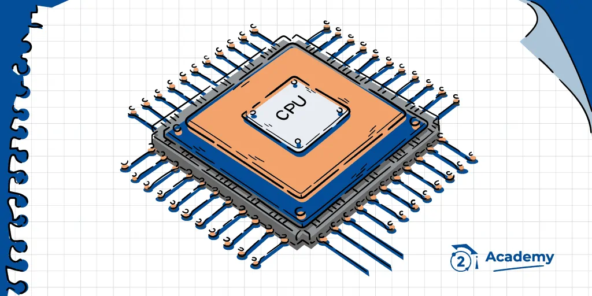
RAM (Memoria de Acceso Aleatorio)
Función: Almacena datos temporales mientras el dispositivo está en funcionamiento. Ejemplo: Guarda variables temporales de un programa de control de temperatura.
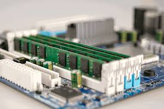
ROM / Flash
Función: Almacena el programa de manera permanente. Ejemplo: Código del sistema operativo en un teléfono o firmware de un microcontrolador.
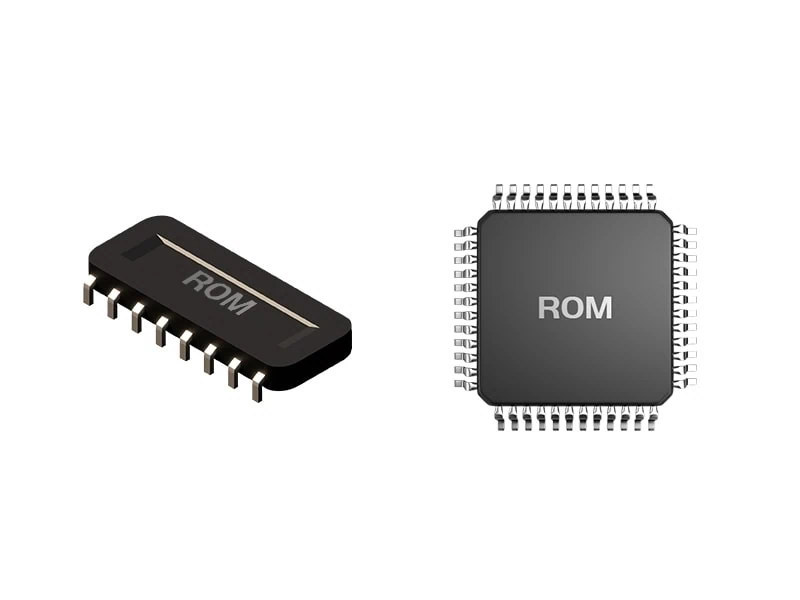
GPIO (Entradas/Salidas de Propósito General)
Función: Permite la comunicación con dispositivos externos (sensores, LEDs, motores). Ejemplo: Conectar un sensor de movimiento para encender una luz.
Función: Canal de comunicación interno entre CPU, memoria y periféricos. Ejemplo: Transfiere información del sensor al CPU para procesarla.
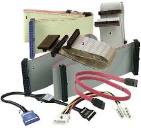
Clock (Reloj)
Función: Sincroniza todas las operaciones internas del hardware. Ejemplo: Define la velocidad a la que el CPU ejecuta instrucciones.
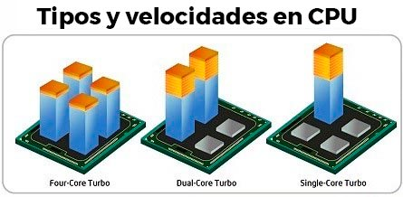
Recurso multimedia
Mira este video que explica los componentes de hardware programable y FPGA:
Conexiones con otros conceptos
Se relaciona con programación de bajo nivel, diseño digital, Verilog y VHDL, arquitectura de computadoras y sistemas embebidos.
Preguntas y Comentarios
4. Microprocesadores y Microcontroladores
Los microprocesadores y microcontroladores son el corazón de muchos sistemas electrónicos. Ambos son unidades de computación, pero difieren en su enfoque y aplicaciones:
¿Qué son?
Microprocesador: Es una unidad central de procesamiento (CPU) que requiere componentes externos como memoria y periféricos para funcionar. Se usa en computadoras y sistemas que necesitan alta capacidad de procesamiento.
Microcontrolador: Es un chip que integra CPU, memoria y periféricos en un solo circuito, diseñado para controlar dispositivos específicos de manera eficiente y con bajo consumo energético.
Ejemplos de la vida real
Microprocesador: La CPU de tu computadora o laptop, que ejecuta múltiples tareas y aplicaciones simultáneamente.
Microcontrolador: Un Arduino o PIC controlando un sistema de riego automático o un robot educativo.
Características
Microprocesador: Alto rendimiento, requiere memoria externa, versátil para sistemas complejos.
Microcontrolador: Bajo consumo, integrado, enfocado a tareas específicas, económico y confiable.
Componentes típicos
CPU (procesador)
Memoria RAM y ROM/Flash
Periféricos de entrada/salida (GPIO, ADC, UART)
Bus de datos y reloj interno
Imágenes ilustrativas
Microprocesador
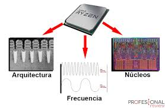
Ejemplo de microprocesador: CPU de computadora. Requiere memoria y periféricos externos para funcionar.
Microcontrolador
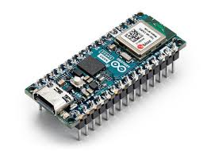
Ejemplo de microcontrolador: Arduino o ESP32. Integra CPU, memoria y periféricos en un solo chip.
Comparativa
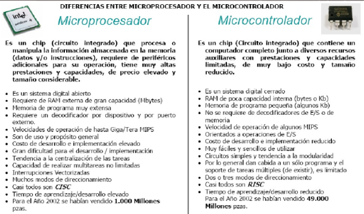
Infografía que muestra la diferencia entre microprocesador y microcontrolador.
Recurso multimedia
Mira este video que explica las diferencias entre microprocesadores y microcontroladores:
Conexiones con otros conceptos
Se relaciona con hardware programable, sistemas embebidos, automatización, Internet de las Cosas (IoT) y diseño de circuitos.
Preguntas y Comentarios
5. Sensores
Los sensores son dispositivos que detectan cambios en el entorno y convierten esa información en señales eléctricas que los sistemas electrónicos pueden interpretar. Son esenciales en sistemas embebidos y automatización, ya que permiten interactuar con el mundo real.
¿Qué son?
Un sensor es un dispositivo capaz de medir magnitudes físicas, químicas o biológicas, y convertirlas en señales eléctricas para ser procesadas por un sistema.
Ejemplos de vida real
Sensor de temperatura en un termostato que regula la calefacción de una casa.
Sensor de proximidad en un teléfono móvil para apagar la pantalla durante una llamada.
Sensor de humedad en un sistema de riego automático que detecta la sequedad de la tierra.
Tipos de sensores
Tipo
Función
Ejemplo
Temperatura
Mide calor o frío
Termostato AC
Luz
Detecta luminosidad
Brillo automático celular
Movimiento
Detecta posición
Luces automáticas
Recurso multimedia
Mira este video que explica cómo funcionan los sensores y su importancia en sistemas embebidos:
Conexiones con otros conceptos
Se relaciona con programación de sensores, electrónica, automatización y Internet de las Cosas (IoT).
Preguntas y Comentarios
6. Conceptos Clave en Plataformas Embebidas
Las plataformas embebidas son sistemas informáticos diseñados para tareas específicas, con un enfoque en la eficiencia y la interacción con el mundo real. La conectividad, la telemetría y los sistemas de tiempo real son conceptos fundamentales en este ámbito.
6.1 Conectividad en Plataformas Embebidas
La conectividad permite la comunicación entre dispositivos y redes, esencial para la interacción con sensores, otros dispositivos y la nube.
Wi-Fi y Bluetooth
Microcontroladores como el ESP32 integran Wi-Fi y Bluetooth, facilitando la comunicación con otros dispositivos y redes.
Conexión Serie y UART
La comunicación UART se utiliza para conectar microcontroladores con módulos periféricos como pantallas, GPS o sensores.
Ejemplo de Conectividad: ESP32
Sensor: Captura datos de temperatura y humedad.
ESP32: Procesa los datos y se conecta a la red Wi-Fi.
Aplicación Móvil: Recibe datos del ESP32 y los muestra al usuario.
6.2 Telemetría en Plataformas Embebidas
La telemetría permite la transmisión de datos a un sistema remoto para su monitoreo y análisis. Se utiliza para enviar información como ubicación, temperatura o nivel de batería.
Monitoreo Remoto: Supervisión de sistemas sin intervención humana.
Análisis de Datos: Permite obtener información valiosa de los datos recopilados.
Toma de Decisiones: Facilita decisiones informadas sobre el sistema.
Ejemplo de Telemetría: Drone
Sensor de Altitud: Mide la altura del drone.
GPS: Determina la ubicación del drone.
Transmisor: Envía datos a la estación de control.
Estación de Control: Recibe datos y muestra la posición y altitud del drone.
6.3 Sistemas de Tiempo Real (RTS)
Un sistema de tiempo real debe responder a eventos dentro de un plazo determinado. La precisión temporal es fundamental, y los resultados deben entregarse dentro de un margen específico.
Ejemplo: Airbag
El sistema de control de un airbag detecta una colisión y despliega el airbag en milisegundos.
Ejemplo: Control Industrial
Los sistemas de control industrial responden rápidamente a cambios en las condiciones de operación para mantener la seguridad y eficiencia.
Recurso Multimedia
Mira este video que explica cómo funcionan las plataformas embebidas:
Imagen Representativa
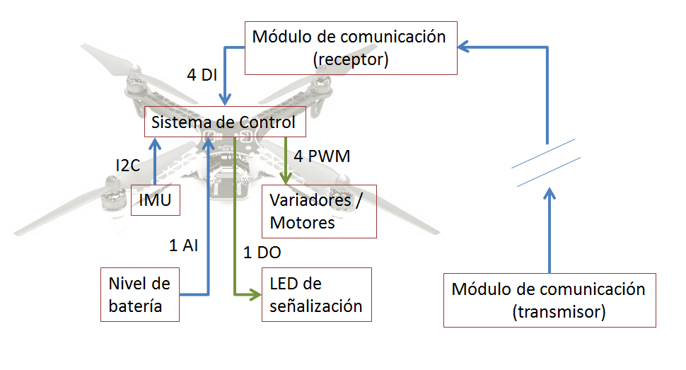
Preguntas y Comentarios
7. Tipos de Conectividad en Plataformas Embebidas
7.1 Conectividad en Hardware Programable
Los hardware programables como FPGA o microcontroladores tienen capacidades limitadas de conectividad integradas, pero pueden expandirse con módulos adicionales.
Wi-Fi y Bluetooth
Los microcontroladores como el ESP32 integran Wi-Fi y Bluetooth.
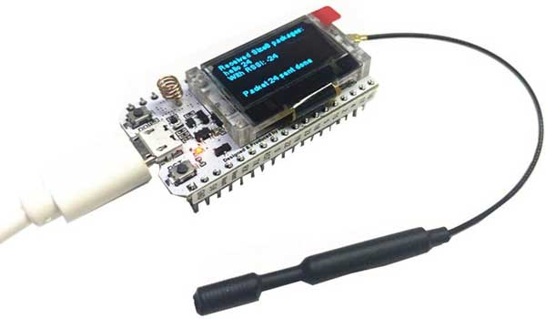
Conexión Serie y UART
La comunicación UART se utiliza para conectar microcontroladores con módulos periféricos.
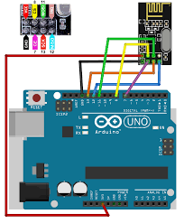
7.2 Conectividad en Computadoras de Una Sola Placa (SBC)
Las SBC como la Raspberry Pi ofrecen más opciones de conectividad gracias a su arquitectura más avanzada y versátil.
Wi-Fi
Bluetooth
Ethernet
USB
HDMI
GPIO
SPI
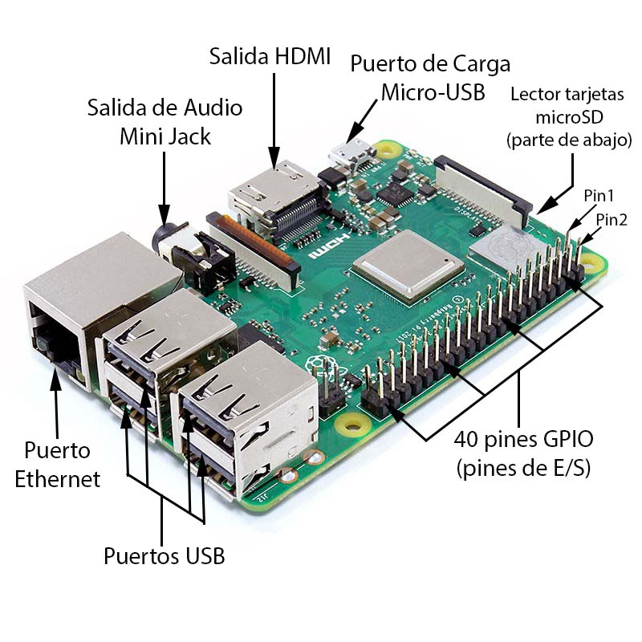
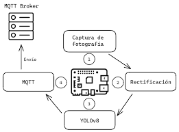
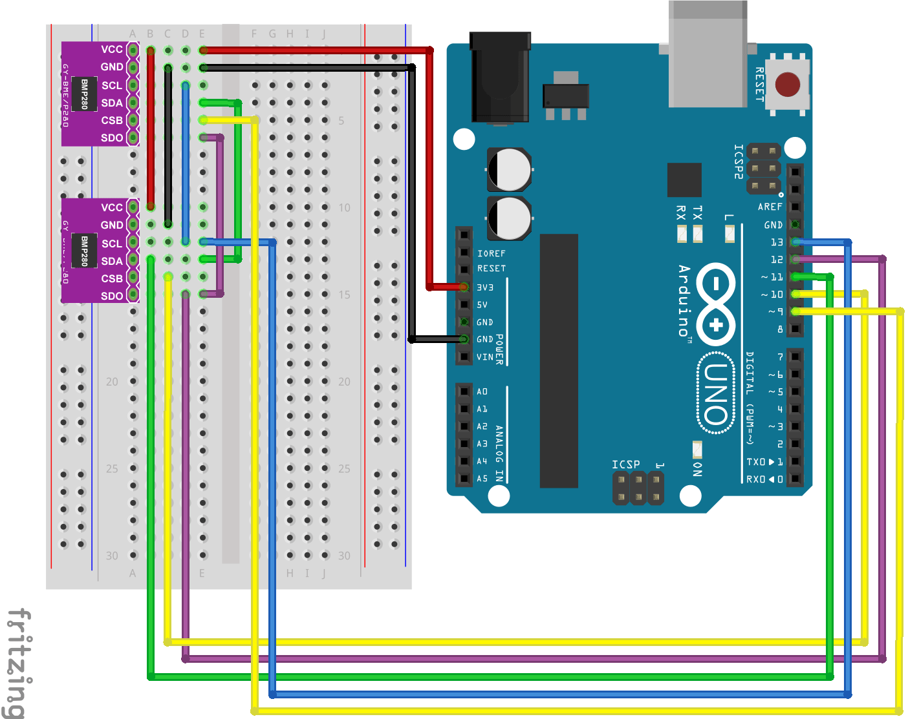
Recurso Multimedia
Mira este video que explica los tipos de conectividad en plataformas embebidas:
Preguntas y Comentarios
8. Proceso de Transmisión de Datos en Sistemas Embebidos
La transmisión de datos en sistemas embebidos se refiere al flujo de información entre el sistema y otros dispositivos o redes. Implica convertir los datos en señales electrónicas que pueden transmitirse por cables, Wi-Fi, Bluetooth o radiofrecuencia.
Pasos del Proceso de Transmisión de Datos
Adquisición de Datos: Los sensores capturan información del entorno (temperatura, presión, movimiento) y el sistema embebido la convierte en señales eléctricas.
Procesamiento de Datos: Los datos se procesan, filtrando ruido, convirtiendo señales analógicas a digitales (ADC) o comprimiéndolos para optimizar la transmisión.
Codificación de Datos: Se elige un protocolo (UART, SPI, I2C) y se empaquetan los datos en tramas con bits de inicio, datos y verificación.
Transmisión de Datos: Los datos codificados se envían a través del medio físico (cable, ondas de radio, etc.) hacia su destino.
Recepción y Decodificación: El receptor verifica errores y procesa o almacena los datos recibidos.
Ejemplos Prácticos
Sensor de Temperatura: Un DHT11 envía temperatura al microcontrolador.
Arduino Uno: Procesa los datos del sensor y decide activar un ventilador.
Sistema Embebido en Fábrica: Usa Ethernet para enviar datos de producción a un servidor.
Monitoreo Ambiental: Sensores con Zigbee envían datos de temperatura y humedad a una estación central.
Mecanismos de Transmisión de Datos
Transmisión por Cable
Serial (UART, SPI, I2C): Comunicación con dispositivos periféricos y sensores.
USB: Transmisión rápida para sistemas embebidos con gran volumen de datos.
Ethernet: Comunicación en red confiable y de alta velocidad.
Transmisión Inalámbrica
Wi-Fi: Ideal para IoT y conexión a la nube.
Bluetooth: Comunicación de corto alcance.
Zigbee: Bajo consumo y para redes distribuidas de sensores.
Transmisión por Radiofrecuencia
RF: Comunicación inalámbrica de largo alcance, usado en telemetría y redes remotas.
Características del Protocolo de Transmisión
Velocidad de Transmisión: Determina la rapidez de envío/recepción de datos.
Seguridad y Encriptación: Protege los datos frente a interceptaciones.
Corrección de Errores: Detecta y corrige errores durante la transmisión.
Latencia: Tiempo que tarda la información en viajar del origen al destino, crítico en sistemas de tiempo real.
Ejemplos de Aplicación
Cámaras de Vigilancia: Ethernet para transmitir grandes volúmenes de datos.
Sistemas de Alarma Doméstica: Wi-Fi con encriptación para privacidad.
Control de Tráfico Aéreo: Latencia mínima crítica para evitar colisiones.
Dispositivos IoT: Wi-Fi para monitoreo remoto en tiempo real.
Recurso Multimedia
Haz clic en el siguiente enlace para ver un video sobre los tipos de conectividad en plataformas embebidas:
La gestión de datos implica recopilar, almacenar, procesar y transmitir la información capturada por los sensores y sistemas embebidos. Es fundamental para tomar decisiones automatizadas o enviar información a sistemas externos.
Pasos de la Gestión de Datos
Recolección: Los sensores capturan datos del entorno.
Procesamiento: Los datos se filtran, analizan y formatean.
Almacenamiento: Se guardan temporal o permanentemente en memoria interna, tarjetas SD o bases de datos.
Transmisión: Se envían a la nube o a otros sistemas para su monitoreo o análisis.
Visualización: Se muestran en pantallas, aplicaciones o dashboards para el usuario.
Ejemplo de Vida Real
En un sistema de riego automatizado: los sensores de humedad recolectan datos, el microcontrolador decide cuándo regar, guarda registros en memoria y envía información a una app para monitoreo remoto.